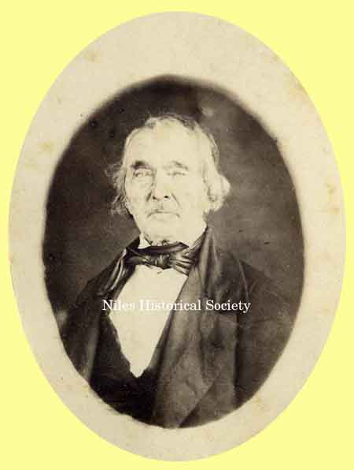

Ward-Thomas Museum


Josiah Robbins Home
Ward — Thomas
Museum
Home of the Niles Historical Society
503 Brown Street Niles, Ohio 44446
Click here to become a Niles Historical Society Member or to renew your membership
Click on any photograph to view a larger image, click on image again to zoom into photograph.
|
Josiah Robbins home on Robbins Avenue. |
Josiah Robbins, Sr. settled in Niles in 1826 and lived in the home with his wife, Maria Heaton, daughter of James Heaton, who had founded Heaton Town (Nilestown, 1834; Niles, 1843) less than a decade earlier. The Robbins home at the corner of Erie Street and Robbins Avenue was purchased in 1908 by Mt. Carmel parishioners and renovated it for use as a chapel. It had been the residence of Josiah Robbins and his wife, Maria Heaton, since 1839. This home had been the center of political thought in the Niles' area during the days of the Whig and Tory parties. The house was in deplorable condition with broken windows, fallen plaster, an inadequate ancient coal furnace, failing plumbing, and no electricity. The building was renovated and the building was divided. The lower floor on the west side was transformed into a chapel, while the east side was made the living quarters for Father Franco. The home was so big that the chapel had seating for 300. It was later used as the Mt. Carmel Rectory. On Easter Sunday, 1908, the first mass was celebrated,
representing a real achievement for Father Franco, the committee
and the community of Our Lady of Mount Carmel. |
|
| |
||
 Josiah Robbins, Sr. |
Josiah Robbins, Jr. |
Josiah Robbins PO1.1108 In 1826 he arrived in Niles from Youngstown. Married Maria Heaton and in 1830 took over management of the Maria furnace with brother in law Warren Heaton. Warren died in 1842 and the furnace was leased to McKinley, Reep & Demsey. His wife died in 1843 and he subsequently marrie Electa Mason, daughter of Ambrose Mason, and joined with his father in law in the prosperous mercantile business. |
|
|
||

{kind=link}
{kind=link}